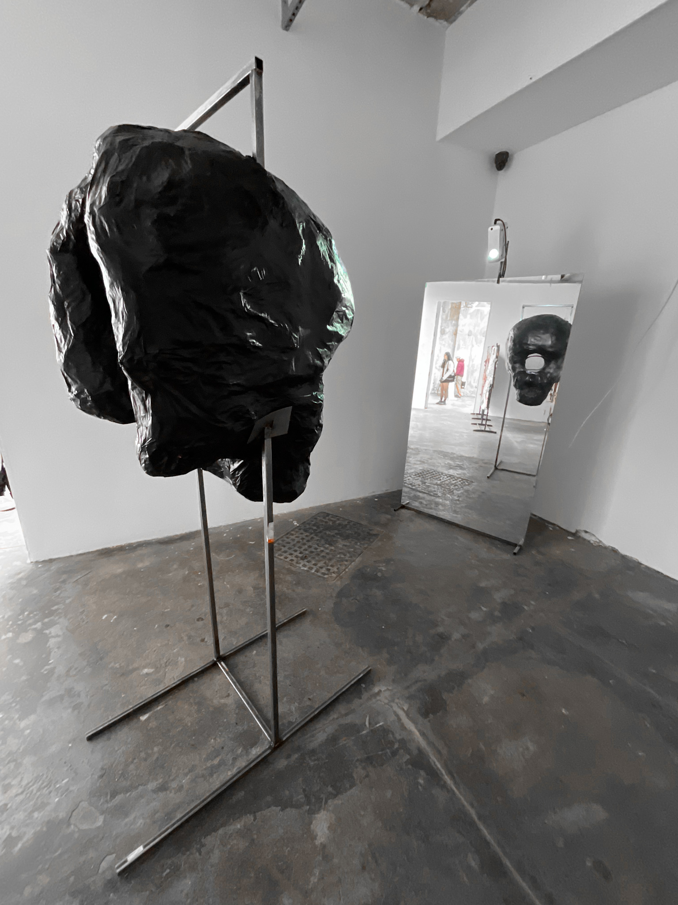

Scroller - Copeland Gallery - 2022
projector, polarised film, steel box tube, card

A fictional beast, sunken deep into doomscrolling despair, withers away to nothing—clutching onto its feed as the world dissolves around it. An almost peep-hole experience: only when looking directly through the eye socket does the depolarized light from the projector pass through, revealing hypnotic patterns illuminating the skull. From any other angle, only pure white light is visible—a ghostly void, withholding its secret.
An almost peep-hole experience: only when looking directly through the eye socket does the depolarized light from the projector pass through, revealing hypnotic patterns illuminating the skull. From any other angle, only pure white light is visible—a ghostly void, withholding its secret.